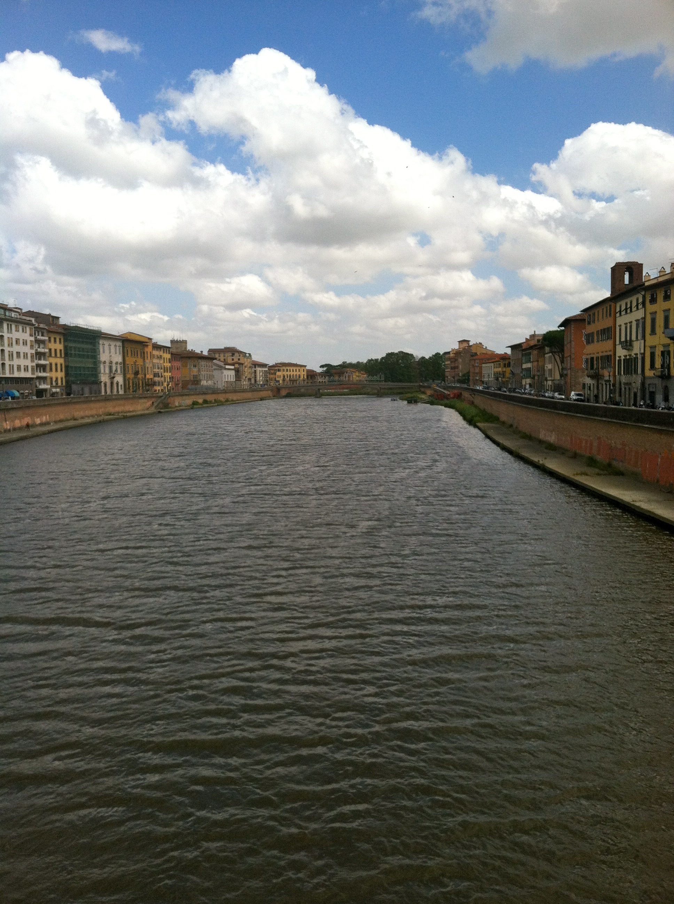

Pisa

Basic Facts about Pisa
Area: 71.43 sq miles
Within: Tuscany
Population: 88,332
Province: Province of Pisa
Pisa is a gorgeous city with over 20 historic churches, several palaces, and various bridges across the Arno River.
Pisa is much like other cities in Italy; however, it consinsts an attraction very distinct.